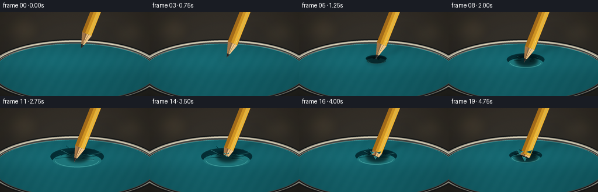
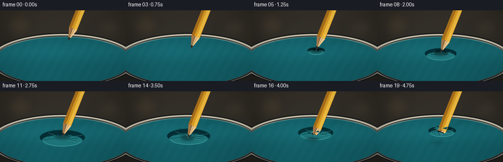
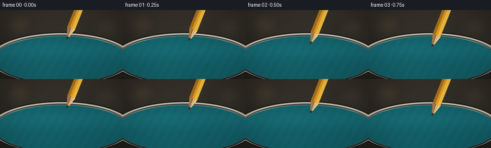
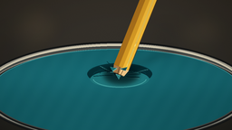
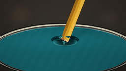
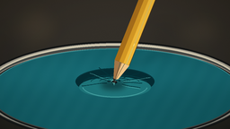
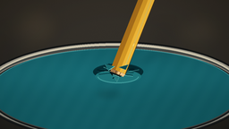

CODING AGENTS AS PIXEL WORLD MODELS
traex/GPT-5.6-Sol · mechanics_0031
点击播放 · 原生 RGB 像素
逐轮保存的候选
回放视频、检查图与代码变化。
每份候选均可单独播放。实际图片检查记录在下方工具轨迹中。
候选 01播放与检查图
点击播放 · 原生 RGB 像素

展开代码变化
--- 上一保存版本
+++ 本次保存版本
@@ -0,0 +1,285 @@
+from pathlib import Path
+import math
+import numpy as np
+from PIL import Image, ImageDraw, ImageFilter
+import artifact_io
+
+W, H, N = 256, 144, 20
+S = 4
+SW, SH = W*S, H*S
+CASE_DIR = Path(__file__).resolve().parent
+
+# Fixed, fine-grained texture: stable from frame to frame (no temporal flicker).
+rng = np.random.default_rng(3107)
+static_grain = rng.normal(0, 1.0, (SH, SW)).astype(np.float32)
+
+
+def sc(v):
+ return int(round(v*S))
+
+
+def box(b):
+ return tuple(sc(v) for v in b)
+
+
+def pts(seq):
+ return [(sc(x), sc(y)) for x, y in seq]
+
+
+def smoothstep(a, b, x):
+ z = np.clip((x-a)/(b-a), 0.0, 1.0)
+ return float(z*z*(3-2*z))
+
+
+def bezier(p0, p1, p2, p3, steps=40):
+ out = []
+ for q in np.linspace(0, 1, steps):
+ r = 1-q
+ x = r**3*p0[0] + 3*r*r*q*p1[0] + 3*r*q*q*p2[0] + q**3*p3[0]
+ y = r**3*p0[1] + 3*r*r*q*p1[1] + 3*r*q*q*p2[1] + q**3*p3[1]
+ out.append((x, y))
+ return out
+
+
+def line(draw, xy, fill, width=1):
+ draw.line(pts(xy), fill=fill, width=max(1, sc(width)), joint='curve')
+
+
+def base_scene():
+ yy, xx = np.mgrid[0:SH, 0:SW]
+ # Warm, out-of-focus workshop background.
+ q = yy/(SH-1)
+ arr = np.zeros((SH, SW, 3), dtype=np.float32)
+ arr[..., 0] = 57 - 14*q
+ arr[..., 1] = 52 - 10*q
+ arr[..., 2] = 45 - 7*q
+ vignette = ((xx-SW*.49)/(SW*.71))**2 + ((yy-SH*.50)/(SH*.80))**2
+ arr -= 14*np.clip(vignette, 0, 1)[..., None]
+ arr += static_grain[..., None]*0.75
+ arr = np.clip(arr, 0, 255).astype(np.uint8)
+ im = Image.fromarray(arr, 'RGB')
+ haze = Image.new('RGBA', (SW, SH), (0,0,0,0))
+ hd = ImageDraw.Draw(haze)
+ # Defocused bench lights and hardware.
+ hd.ellipse(box((14, 7, 67, 54)), fill=(178,145,91,28))
+ hd.ellipse(box((204, 16, 247, 54)), fill=(210,178,112,19))
+ hd.rectangle(box((3, 35, 29, 126)), fill=(10,12,13,35))
+ hd.ellipse(box((168, 29, 205, 62)), fill=(14,18,18,35))
+ haze = haze.filter(ImageFilter.GaussianBlur(sc(11)))
+ im = Image.alpha_composite(im.convert('RGBA'), haze).convert('RGB')
+ d = ImageDraw.Draw(im)
+ # Metal retaining hoop beneath the membrane.
+ d.ellipse(box((-23, 46, 279, 157)), fill=(44,45,43), outline=(20,22,22), width=sc(2))
+ d.ellipse(box((-20, 48, 276, 154)), outline=(156,151,137), width=sc(7))
+ d.ellipse(box((-18, 50, 274, 152)), outline=(69,72,69), width=sc(4))
+ d.arc(box((-17, 49, 273, 153)), 186, 351, fill=(213,205,180), width=sc(2))
+
+ # Elliptical rubber membrane with subtle latex-like texture.
+ mask = Image.new('L', (SW, SH), 0)
+ md = ImageDraw.Draw(mask)
+ md.ellipse(box((-11, 54, 267, 151)), fill=255)
+ y = yy/S
+ x = xx/S
+ sheet = np.zeros((SH, SW, 4), dtype=np.uint8)
+ highlight = 10*np.exp(-((y-83)/21)**2) + 5*np.exp(-((x-86)/72)**2)
+ micro = static_grain*0.65 + 1.2*np.sin(x*.33 + y*.19)
+ sheet[...,0] = np.clip(18 + highlight*.35 + micro, 0, 255)
+ sheet[...,1] = np.clip(91 + highlight + micro, 0, 255)
+ sheet[...,2] = np.clip(99 + highlight*1.08 + micro, 0, 255)
+ sheet[...,3] = np.asarray(mask)
+ im = Image.alpha_composite(im.convert('RGBA'), Image.fromarray(sheet, 'RGBA')).convert('RGB')
+ d = ImageDraw.Draw(im)
+ # Back and front rim accents communicate that the sheet is tightly clamped.
+ d.arc(box((-11, 54, 267, 151)), 183, 357, fill=(53,137,142), width=sc(1.1))
+ d.arc(box((-16, 49, 272, 155)), 7, 174, fill=(25,28,28), width=sc(3))
+ d.arc(box((-16, 49, 272, 155)), 10, 169, fill=(125,125,116), width=sc(1))
+ return im
+
+
+def draw_deformation(im, press, puncture):
+ d = ImageDraw.Draw(im, 'RGBA')
+ cx, cy = 132.0, 79.0
+ # During puncture the membrane snaps partway back up around the shaft.
+ depth = 15.0 * press * (1.0 - 0.60*puncture)
+ if depth < .15:
+ return
+ ex = 15 + 2.15*depth
+ ey = 4.8 + .74*depth
+ oy = depth*.28
+ # A broad shaded basin. Offset overlays form a dark rear wall and bright near wall.
+ d.ellipse(box((cx-ex, cy-ey+oy, cx+ex, cy+ey+oy)), fill=(5,45,52,35+int(depth*3.2)))
+ d.ellipse(box((cx-ex*.91, cy-ey*.47+oy+2.0, cx+ex*.91, cy+ey*1.03+oy+3.0)),
+ fill=(30,117,122,22+int(depth*2.0)))
+ d.arc(box((cx-ex, cy-ey+oy, cx+ex, cy+ey+oy)), 191, 348,
+ fill=(6,52,59,78+int(depth*3.5)), width=sc(1.2))
+ d.arc(box((cx-ex*.83, cy-ey*.50+oy+1, cx+ex*.83, cy+ey*.93+oy+4)), 7, 174,
+ fill=(68,160,160,42+int(depth*2.2)), width=sc(1.0))
+ # Elliptical contour bands show the membrane being pulled down.
+ for k, a in enumerate((.40, .62, .82)):
+ rx = ex*a
+ ry = ey*a*.72
+ yy = cy + oy*a + depth*.15*a
+ d.arc(box((cx-rx, yy-ry, cx+rx, yy+ry)), 185, 354,
+ fill=(5,59,66, max(12, int(48*press*(1-puncture*.5)))), width=sc(.7))
+ # Fine radial tension creases: alternating shadow and glint.
+ angles = [-164, -141, -116, -75, -38, -15, 17, 39, 155]
+ amount = press*(1-.38*puncture)
+ for i, ang in enumerate(angles):
+ th = math.radians(ang)
+ L = (25 + (i%3)*5 + depth*.65)*amount
+ start = (cx + math.cos(th)*(6+depth*.30), cy+oy + math.sin(th)*(2.4+depth*.18))
+ end = (cx + math.cos(th)*L, cy + math.sin(th)*L*.38)
+ bend = (i%2-.5)*3.1*amount
+ mid1 = (start[0]+(end[0]-start[0])*.33, start[1]+(end[1]-start[1])*.33+bend)
+ mid2 = (start[0]+(end[0]-start[0])*.70, start[1]+(end[1]-start[1])*.70-bend*.35)
+ curve = bezier(start, mid1, mid2, end, 26)
+ line(d, curve, (3,52,59,int(64*amount)), .85)
+ if i in (1,3,5,7):
+ shifted = [(x, y+1.1) for x,y in curve]
+ line(d, shifted, (93,181,176,int(35*amount)), .55)
+
+
+def pencil_geometry(P):
+ vx, vy = -0.370, 0.929 # points from eraser toward graphite tip
+ nx, ny = vy, -vx
+ cone_len = 27.0
+ half = 8.8
+ Q = (P[0]-vx*cone_len, P[1]-vy*cone_len)
+ F = (Q[0]-vx*175, Q[1]-vy*175)
+ return (vx,vy,nx,ny,Q,F,half)
+
+
+def draw_pencil_layer(P):
+ layer = Image.new('RGBA', (SW, SH), (0,0,0,0))
+ d = ImageDraw.Draw(layer, 'RGBA')
+ vx,vy,nx,ny,Q,F,w = pencil_geometry(P)
+ ql=(Q[0]+nx*w,Q[1]+ny*w); qr=(Q[0]-nx*w,Q[1]-ny*w)
+ fl=(F[0]+nx*w,F[1]+ny*w); fr=(F[0]-nx*w,F[1]-ny*w)
+ # Painted hexagonal shaft, with distinct facets and a thin lacquer glint.
+ d.polygon(pts([ql,fl,fr,qr]), fill=(211,151,36,255), outline=(79,53,20,255))
+ d.polygon(pts([ql,fl,(F[0]+nx*1.7,F[1]+ny*1.7),(Q[0]+nx*1.7,Q[1]+ny*1.7)]), fill=(239,183,55,255))
+ d.polygon(pts([(Q[0]-nx*3.3,Q[1]-ny*3.3),(F[0]-nx*3.3,F[1]-ny*3.3),fr,qr]), fill=(166,109,26,255))
+ line(d, [(Q[0]+nx*5.2,Q[1]+ny*5.2),(F[0]+nx*5.2,F[1]+ny*5.2)], (255,220,105,205), 1.1)
+ line(d, [ql,fl], (78,50,17,170), .8)
+ # Exposed cedar cone and its facets.
+ d.polygon(pts([ql,P,qr]), fill=(205,159,101,255), outline=(74,49,32,255))
+ d.polygon(pts([ql,P,Q]), fill=(239,197,135,255))
+ d.polygon(pts([Q,P,qr]), fill=(164,118,72,255))
+ # Grain streaks converge toward the tip.
+ for frac, alpha in ((.32,125),(.62,95)):
+ A=(Q[0]+nx*w*(1-2*frac),Q[1]+ny*w*(1-2*frac))
+ B=(P[0]-vx*3.0+nx*(frac-.5),P[1]-vy*3.0+ny*(frac-.5))
+ line(d,[A,B],(112,72,38,alpha),.55)
+ # Dark graphite point, visibly sharp before puncture.
+ G=(P[0]-vx*7.3,P[1]-vy*7.3)
+ gw=2.8
+ d.polygon(pts([(G[0]+nx*gw,G[1]+ny*gw),P,(G[0]-nx*gw,G[1]-ny*gw)]), fill=(38,39,37,255))
+ line(d, [(G[0]+nx*.8,G[1]+ny*.8),P], (112,112,103,210), .6)
+ return layer
+
+
+def draw_shadow(im, P, contact_amount):
+ if contact_amount <= 0: return
+ sh = Image.new('RGBA', (SW,SH), (0,0,0,0))
+ d=ImageDraw.Draw(sh)
+ # Compact contact shadow plus a soft diagonal pencil shadow.
+ a=int(76*contact_amount)
+ d.ellipse(box((116,74,151,91)), fill=(0,14,17,a))
+ d.polygon(pts([(134,75),(146,77),(199,56),(192,51)]), fill=(0,9,12,int(a*.42)))
+ sh=sh.filter(ImageFilter.GaussianBlur(sc(3.1)))
+ im.alpha_composite(sh)
+
+
+def draw_hole_under(im, p):
+ if p <= .015: return
+ d=ImageDraw.Draw(im,'RGBA')
+ cx,cy=132.0,79.4
+ r=1.0+8.8*(p**.72)
+ # Irregular aperture: elongated along the principal latex tear.
+ poly=[(cx-r*1.18,cy-.18*r),(cx-.42*r,cy-.62*r),(cx+.10*r,cy-.46*r),
+ (cx+.93*r,cy-.19*r),(cx+.72*r,cy+.43*r),(cx+.12*r,cy+.66*r),
+ (cx-.70*r,cy+.48*r)]
+ d.polygon(pts(poly), fill=(3,19,24,245), outline=(1,11,15,255))
+ d.ellipse(box((cx-r*.48,cy-r*.25,cx+r*.55,cy+r*.38)), fill=(0,7,10,190))
+ # Four propagating slit tips make the puncture read as tearing rather than a clean hole.
+ rays=[(-1.0,-.10,1.0),(.92,-.22,.73),(-.35,.78,.60),(.18,-.72,.45)]
+ for dx,dy,m in rays:
+ L=(2.5+11*p)*m
+ start=(cx+dx*r*.68,cy+dy*r*.45)
+ end=(cx+dx*(r+L),cy+dy*(r*.7+L*.45))
+ mid=((start[0]+end[0])*.5 + dy*1.2,(start[1]+end[1])*.5-dx*.7)
+ line(d,bezier(start,mid,mid,end,16),(1,25,31,205),1.05)
+ line(d,[(start[0],start[1]+.8),(mid[0],mid[1]+.55)],(83,170,162,85),.45)
+
+
+def draw_flaps_over(im,p):
+ if p <= .02:return
+ d=ImageDraw.Draw(im,'RGBA')
+ cx,cy=132.0,79.4
+ r=1+8.8*(p**.72)
+ # Three stretched triangular lips curl toward the viewer/away from the opening.
+ d.polygon(pts([(cx-r*1.12,cy-.08*r),(cx-r*.42,cy-.55*r),(cx-r*1.48,cy-.76*r)]),
+ fill=(24,104,109,245), outline=(74,164,159,150))
+ d.polygon(pts([(cx+r*.08,cy-.46*r),(cx+r*.88,cy-.16*r),(cx+r*1.16,cy-.75*r)]),
+ fill=(15,73,82,245), outline=(58,143,143,150))
+ d.polygon(pts([(cx-r*.65,cy+r*.38),(cx+r*.12,cy+r*.64),(cx-.13*r,cy+r*1.20)]),
+ fill=(41,123,125,238), outline=(91,176,168,165))
+ # Bright stretched rims catch the macro light.
+ line(d,[(cx-r*1.10,cy-.08*r),(cx-r*.42,cy-.55*r)],(113,201,190,185),.65)
+ line(d,[(cx-r*.62,cy+r*.38),(cx+r*.12,cy+r*.63)],(105,193,184,175),.75)
+
+
+def render_frame(i):
+ t=i/(N-1)
+ im=base_scene().convert('RGBA')
+ # 0-3 approach, 4-12 steadily press, 13-19 tear and penetrate.
+ approach=smoothstep(0.0,.18,t)
+ press=smoothstep(.18,.64,t)
+ puncture=smoothstep(.64,1.0,t)
+ draw_deformation(im,press,puncture)
+ contact=max(0.0,smoothstep(.12,.34,t))
+
+ vx,vy=-.370,.929
+ C=(132.0,79.0)
+ if t < .18:
+ # Starts clearly above the membrane and arrives at first contact.
+ back=18.0*(1-approach)
+ P=(C[0]-vx*back,C[1]-vy*back)
+ else:
+ # Push the point into a deep dimple; then the membrane tears around the same axis.
+ depth=15.0*press + 12.5*puncture
+ P=(C[0]+vx*depth,C[1]+vy*depth)
+
+ draw_shadow(im,P,contact)
+ draw_hole_under(im,puncture)
+ pencil=draw_pencil_layer(P)
+ if puncture>.01:
+ # The part below the membrane is hidden. A soft 1px transition avoids a cutout look.
+ arr=np.asarray(pencil).copy()
+ yy,xx=np.mgrid[0:SH,0:SW]
+ X=xx/S; Y=yy/S
+ along=(X-C[0])*vx+(Y-C[1])*vy
+ limit=2.1+1.5*puncture
+ vis=np.clip((limit+0.8-along)/1.25,0,1)
+ arr[...,3]=(arr[...,3].astype(np.float32)*vis).astype(np.uint8)
+ pencil=Image.fromarray(arr,'RGBA')
+ im=Image.alpha_composite(im,pencil)
+ draw_flaps_over(im,puncture)
+
+ # A restrained macro-camera vignette and warm highlight unify the layers.
+ arr=np.asarray(im.convert('RGB')).astype(np.float32)
+ yy,xx=np.mgrid[0:SH,0:SW]
+ vig=1-.13*np.clip(((xx-SW*.5)/(SW*.72))**2+((yy-SH*.49)/(SH*.88))**2,0,1)
+ arr*=vig[...,None]
+ arr=np.clip(arr,0,255).astype(np.uint8)
+ out=Image.fromarray(arr,'RGB').resize((W,H),Image.Resampling.LANCZOS)
+ return np.asarray(out,dtype=np.uint8)
+
+
+def main():
+ frames=np.stack([render_frame(i) for i in range(N)],axis=0)
+ artifact_io.save(frames,CASE_DIR)
+ print('saved',frames.shape,frames.dtype,'to',CASE_DIR)
+
+if __name__=='__main__':
+ main()
候选 02播放与检查图
点击播放 · 原生 RGB 像素


展开代码变化
--- 上一保存版本
+++ 本次保存版本
@@ -98,14 +98,18 @@
def draw_deformation(im, press, puncture):
d = ImageDraw.Draw(im, 'RGBA')
- cx, cy = 132.0, 79.0
# During puncture the membrane snaps partway back up around the shaft.
depth = 15.0 * press * (1.0 - 0.60*puncture)
if depth < .15:
return
+ # Before rupture, the center of the rubber dimple must travel with the point.
+ # Once split, elastic recoil pulls this material back toward the original plane.
+ vx, vy = -.370, .929
+ cx = 132.0 + vx*depth*(1.0-puncture)
+ cy = 79.0 + vy*depth*(1.0-puncture)
ex = 15 + 2.15*depth
ey = 4.8 + .74*depth
- oy = depth*.28
+ oy = 0.8 + depth*.05
# A broad shaded basin. Offset overlays form a dark rear wall and bright near wall.
d.ellipse(box((cx-ex, cy-ey+oy, cx+ex, cy+ey+oy)), fill=(5,45,52,35+int(depth*3.2)))
d.ellipse(box((cx-ex*.91, cy-ey*.47+oy+2.0, cx+ex*.91, cy+ey*1.03+oy+3.0)),
@@ -183,8 +187,9 @@
sh = Image.new('RGBA', (SW,SH), (0,0,0,0))
d=ImageDraw.Draw(sh)
# Compact contact shadow plus a soft diagonal pencil shadow.
- a=int(76*contact_amount)
- d.ellipse(box((116,74,151,91)), fill=(0,14,17,a))
+ a=int(38*contact_amount)
+ px, py = P
+ d.ellipse(box((px-13,py-4.1,px+13,py+4.1)), fill=(0,12,15,a))
d.polygon(pts([(134,75),(146,77),(199,56),(192,51)]), fill=(0,9,12,int(a*.42)))
sh=sh.filter(ImageFilter.GaussianBlur(sc(3.1)))
im.alpha_composite(sh)
@@ -193,7 +198,10 @@
def draw_hole_under(im, p):
if p <= .015: return
d=ImageDraw.Draw(im,'RGBA')
- cx,cy=132.0,79.4
+ # The puncture begins at the bottom of the stretched dimple, then recoils
+ # toward its unstressed location while the pencil continues through it.
+ cx=132.0 + (-.370)*15.0*(1-p)
+ cy=79.4 + (.929)*15.0*(1-p)
r=1.0+8.8*(p**.72)
# Irregular aperture: elongated along the principal latex tear.
poly=[(cx-r*1.18,cy-.18*r),(cx-.42*r,cy-.62*r),(cx+.10*r,cy-.46*r),
@@ -215,7 +223,8 @@
def draw_flaps_over(im,p):
if p <= .02:return
d=ImageDraw.Draw(im,'RGBA')
- cx,cy=132.0,79.4
+ cx=132.0 + (-.370)*15.0*(1-p)
+ cy=79.4 + (.929)*15.0*(1-p)
r=1+8.8*(p**.72)
# Three stretched triangular lips curl toward the viewer/away from the opening.
d.polygon(pts([(cx-r*1.12,cy-.08*r),(cx-r*.42,cy-.55*r),(cx-r*1.48,cy-.76*r)]),
@@ -259,7 +268,8 @@
yy,xx=np.mgrid[0:SH,0:SW]
X=xx/S; Y=yy/S
along=(X-C[0])*vx+(Y-C[1])*vy
- limit=2.1+1.5*puncture
+ # The occlusion edge follows the bottom of the dimple as it recoils.
+ limit=15.0*(1-puncture)+2.1+1.5*puncture
vis=np.clip((limit+0.8-along)/1.25,0,1)
arr[...,3]=(arr[...,3].astype(np.float32)*vis).astype(np.uint8)
pencil=Image.fromarray(arr,'RGBA')
可观测工具轨迹
实际执行的命令与返回图片。
命令 1exit 0
/bin/bash -lc 'cat prompt.txt'
命令 2exit 0
/bin/bash -lc 'cat GENERATION_RULES.md'
命令 3exit 0
/bin/bash -lc 'cat task_spec.json'
命令 4exit 0
/bin/bash -lc "find . -maxdepth 2 -type f -printf '%p\\n' | sort"
命令 5exit 0
/bin/bash -lc 'cat artifact_io.py'
命令 6exit 0
/bin/bash -lc "cat > generate.py <<'PY'
from pathlib import Path
import math
import numpy as np
from PIL import Image, ImageDraw, ImageFilter
import artifact_io
W, H, N = 256, 144, 20
S = 4
SW, SH = W*S, H*S
CASE_DIR = Path(__file__).resolve().parent
# Fixed, fine-grained texture: stable from frame to frame (no temporal flicker).
rng = np.random.default_rng(3107)
static_grain = rng.normal(0, 1.0, (SH, SW)).astype(np.float32)
def sc(v):
return int(round(v*S))
def box(b):
return tuple(sc(v) for v in b)
def pts(seq):
return [(sc(x), sc(y)) for x, y in seq]
def smoothstep(a, b, x):
z = np.clip((x-a)/(b-a), 0.0, 1.0)
return float(z*z*(3-2*z))
def bezier(p0, p1, p2, p3, steps=40):
out = []
for q in np.linspace(0, 1, steps):
r = 1-q
x = r**3*p0[0] + 3*r*r*q*p1[0] + 3*r*q*q*p2[0] + q**3*p3[0]
y = r**3*p0[1] + 3*r*r*q*p1[1] + 3*r*q*q*p2[1] + q**3*p3[1]
out.append((x, y))
return out
def line(draw, xy, fill, width=1):
draw.line(pts(xy), fill=fill, width=max(1, sc(width)), joint='curve')
def base_scene():
yy, xx = np.mgrid[0:SH, 0:SW]
# Warm, out-of-focus workshop background.
q = yy/(SH-1)
arr = np.zeros((SH, SW, 3), dtype=np.float32)
arr[..., 0] = 57 - 14*q
arr[..., 1] = 52 - 10*q
arr[..., 2] = 45 - 7*q
vignette = ((xx-SW*.49)/(SW*.71))**2 + ((yy-SH*.50)/(SH*.80))**2
arr -= 14*np.clip(vignette, 0, 1)[..., None]
arr += static_grain[..., None]*0.75
arr = np.clip(arr, 0, 255).astype(np.uint8)
im = Image.fromarray(arr, 'RGB')
haze = Image.new('RGBA', (SW, SH), (0,0,0,0))
hd = ImageDraw.Draw(haze)
# Defocused bench lights and hardware.
hd.ellipse(box((14, 7, 67, 54)), fill=(178,145,91,28))
hd.ellipse(box((204, 16, 247, 54)), fill=(210,178,112,19))
hd.rectangle(box((3, 35, 29, 126)), fill=(10,12,13,35))
hd.ellipse(box((168, 29, 205, 62)), fill=(14,18,18,35))
haze = haze.filter(ImageFilter.GaussianBlur(sc(11)))
im = Image.alpha_composite(im.convert('RGBA'), haze).convert('RGB')
d = ImageDraw.Draw(im)
# Metal retaining hoop beneath the membrane.
d.ellipse(box((-23, 46, 279, 157)), fill=(44,45,43), outline=(20,22,22), width=sc(2))
d.ellipse(box((-20, 48, 276, 154)), outline=(156,151,137), width=sc(7))
d.ellipse(box((-18, 50, 274, 152)), outline=(69,72,69), width=sc(4))
d.arc(box((-17, 49, 273, 153)), 186, 351, fill=(213,205,180), width=sc(2))
# Elliptical rubber membrane with subtle latex-like texture.
mask = Image.new('L', (SW, SH), 0)
md = ImageDraw.Draw(mask)
md.ellipse(box((-11, 54, 267, 151)), fill=255)
y = yy/S
x = xx/S
sheet = np.zeros((SH, SW, 4), dtype=np.uint8)
highlight = 10*np.exp(-((y-83)/21)**2) + 5*np.exp(-((x-86)/72)**2)
micro = static_grain*0.65 + 1.2*np.sin(x*.33 + y*.19)
sheet[...,0] = np.clip(18 + highlight*.35 + micro, 0, 255)
sheet[...,1] = np.clip(91 + highlight + micro, 0, 255)
sheet[...,2] = np.clip(99 + highlight*1.08 + micro, 0, 255)
sheet[...,3] = np.asarray(mask)
im = Image.alpha_composite(im.convert('RGBA'), Image.fromarray(sheet, 'RGBA')).convert('RGB')
d = ImageDraw.Draw(im)
# Back and front rim accents communicate that the sheet is tightly clamped.
d.arc(box((-11, 54, 267, 151)), 183, 357, fill=(53,137,142), width=sc(1.1))
d.arc(box((-16, 49, 272, 155)), 7, 174, fill=(25,28,28), width=sc(3))
d.arc(box((-16, 49, 272, 155)), 10, 169, fill=(125,125,116), width=sc(1))
return im
def draw_deformation(im, press, puncture):
d = ImageDraw.Draw(im, 'RGBA')
cx, cy = 132.0, 79.0
# During puncture the membrane snaps partway back up around the shaft.
depth = 15.0 * press * (1.0 - 0.60*puncture)
if depth < .15:
return
ex = 15 + 2.15*depth
ey = 4.8 + .74*depth
oy = depth*.28
# A broad shaded basin. Offset overlays form a dark rear wall and bright near wall.
d.ellipse(box((cx-ex, cy-ey+oy, cx+ex, cy+ey+oy)), fill=(5,45,52,35+int(depth*3.2)))
d.ellipse(box((cx-ex*.91, cy-ey*.47+oy+2.0, cx+ex*.91, cy+ey*1.03+oy+3.0)),
fill=(30,117,122,22+int(depth*2.0)))
d.arc(box((cx-ex, cy-ey+oy, cx+ex, cy+ey+oy)), 191, 348,
fill=(6,52,59,78+int(depth*3.5)), width=sc(1.2))
d.arc(box((cx-ex*.83, cy-ey*.50+oy+1, cx+ex*.83, cy+ey*.93+oy+4)), 7, 174,
fill=(68,160,160,42+int(depth*2.2)), width=sc(1.0))
# Elliptical contour bands show the membrane being pulled down.
for k, a in enumerate((.40, .62, .82)):
rx = ex*a
ry = ey*a*.72
yy = cy + oy*a + depth*.15*a
d.arc(box((cx-rx, yy-ry, cx+rx, yy+ry)), 185, 354,
fill=(5,59,66, max(12, int(48*press*(1-puncture*.5)))), width=sc(.7))
# Fine radial tension creases: alternating shadow and glint.
angles = [-164, -141, -116, -75, -38, -15, 17, 39, 155]
amount = press*(1-.38*puncture)
for i, ang in enumerate(angles):
th = math.radians(ang)
L = (25 + (i%3)*5 + depth*.65)*amount
start = (cx + math.cos(th)*(6+depth*.30), cy+oy + math.sin(th)*(2.4+depth*.18))
end = (cx + math.cos(th)*L, cy + math.sin(th)*L*.38)
bend = (i%2-.5)*3.1*amount
mid1 = (start[0]+(end[0]-start[0])*.33, start[1]+(end[1]-start[1])*.33+bend)
mid2 = (start[0]+(end[0]-start[0])*.70, start[1]+(end[1]-start[1])*.70-bend*.35)
curve = bezier(start, mid1, mid2, end, 26)
line(d, curve, (3,52,59,int(64*amount)), .85)
if i in (1,3,5,7):
shifted = [(x, y+1.1) for x,y in curve]
line(d, shifted, (93,181,176,int(35*amount)), .55)
def pencil_geometry(P):
vx, vy = -0.370, 0.929 # points from eraser toward graphite tip
nx, ny = vy, -vx
cone_len = 27.0
half = 8.8
Q = (P[0]-vx*cone_len, P[1]-vy*cone_len)
F = (Q[0]-vx*175, Q[1]-vy*175)
return (vx,vy,nx,ny,Q,F,half)
def draw_pencil_layer(P):
layer = Image.new('RGBA', (SW, SH), (0,0,0,0))
d = ImageDraw.Draw(layer, 'RGBA')
vx,vy,nx,ny,Q,F,w = pencil_geometry(P)
ql=(Q[0]+nx*w,Q[1]+ny*w); qr=(Q[0]-nx*w,Q[1]-ny*w)
fl=(F[0]+nx*w,F[1]+ny*w); fr=(F[0]-nx*w,F[1]-ny*w)
# Painted hexagonal shaft, with distinct facets and a thin lacquer glint.
d.polygon(pts([ql,fl,fr,qr]), fill=(211,151,36,255), outline=(79,53,20,255))
d.polygon(pts([ql,fl,(F[0]+nx*1.7,F[1]+ny*1.7),(Q[0]+nx*1.7,Q[1]+ny*1.7)]), fill=(239,183,55,255))
d.polygon(pts([(Q[0]-nx*3.3,Q[1]-ny*3.3),(F[0]-nx*3.3,F[1]-ny*3.3),fr,qr]), fill=(166,109,26,255))
line(d, [(Q[0]+nx*5.2,Q[1]+ny*5.2),(F[0]+nx*5.2,F[1]+ny*5.2)], (255,220,105,205), 1.1)
line(d, [ql,fl], (78,50,17,170), .8)
# Exposed cedar cone and its facets.
d.polygon(pts([ql,P,qr]), fill=(205,159,101,255), outline=(74,49,32,255))
d.polygon(pts([ql,P,Q]), fill=(239,197,135,255))
d.polygon(pts([Q,P,qr]), fill=(164,118,72,255))
# Grain streaks converge toward the tip.
for frac, alpha in ((.32,125),(.62,95)):
A=(Q[0]+nx*w*(1-2*frac),Q[1]+ny*w*(1-2*frac))
B=(P[0]-vx*3.0+nx*(frac-.5),P[1]-vy*3.0+ny*(frac-.5))
line(d,[A,B],(112,72,38,alpha),.55)
# Dark graphite point, visibly sharp before puncture.
G=(P[0]-vx*7.3,P[1]-vy*7.3)
gw=2.8
d.polygon(pts([(G[0]+nx*gw,G[1]+ny*gw),P,(G[0]-nx*gw,G[1]-ny*gw)]), fill=(38,39,37,255))
line(d, [(G[0]+nx*.8,G[1]+ny*.8),P], (112,112,103,210), .6)
return layer
def draw_shadow(im, P, contact_amount):
if contact_amount <= 0: return
sh = Image.new('RGBA', (SW,SH), (0,0,0,0))
d=ImageDraw.Draw(sh)
# Compact contact shadow plus a soft diagonal pencil shadow.
a=int(76*contact_amount)
d.ellipse(box((116,74,151,91)), fill=(0,14,17,a))
d.polygon(pts([(134,75),(146,77),(199,56),(192,51)]), fill=(0,9,12,int(a*.42)))
sh=sh.filter(ImageFilter.GaussianBlur(sc(3.1)))
im.alpha_composite(sh)
def draw_hole_under(im, p):
if p <= .015: return
d=ImageDraw.Draw(im,'RGBA')
cx,cy=132.0,79.4
r=1.0+8.8*(p**.72)
# Irregular aperture: elongated along the principal latex tear.
poly=[(cx-r*1.18,cy-.18*r),(cx-.42*r,cy-.62*r),(cx+.10*r,cy-.46*r),
(cx+.93*r,cy-.19*r),(cx+.72*r,cy+.43*r),(cx+.12*r,cy+.66*r),
(cx-.70*r,cy+.48*r)]
d.polygon(pts(poly), fill=(3,19,24,245), outline=(1,11,15,255))
d.ellipse(box((cx-r*.48,cy-r*.25,cx+r*.55,cy+r*.38)), fill=(0,7,10,190))
# Four propagating slit tips make the puncture read as tearing rather than a clean hole.
rays=[(-1.0,-.10,1.0),(.92,-.22,.73),(-.35,.78,.60),(.18,-.72,.45)]
for dx,dy,m in rays:
L=(2.5+11*p)*m
start=(cx+dx*r*.68,cy+dy*r*.45)
end=(cx+dx*(r+L),cy+dy*(r*.7+L*.45))
mid=((start[0]+end[0])*.5 + dy*1.2,(start[1]+end[1])*.5-dx*.7)
line(d,bezier(start,mid,mid,end,16),(1,25,31,205),1.05)
line(d,[(start[0],start[1]+.8),(mid[0],mid[1]+.55)],(83,170,162,85),.45)
def draw_flaps_over(im,p):
if p <= .02:return
d=ImageDraw.Draw(im,'RGBA')
cx,cy=132.0,79.4
r=1+8.8*(p**.72)
# Three stretched triangular lips curl toward the viewer/away from the opening.
d.polygon(pts([(cx-r*1.12,cy-.08*r),(cx-r*.42,cy-.55*r),(cx-r*1.48,cy-.76*r)]),
fill=(24,104,109,245), outline=(74,164,159,150))
d.polygon(pts([(cx+r*.08,cy-.46*r),(cx+r*.88,cy-.16*r),(cx+r*1.16,cy-.75*r)]),
fill=(15,73,82,245), outline=(58,143,143,150))
d.polygon(pts([(cx-r*.65,cy+r*.38),(cx+r*.12,cy+r*.64),(cx-.13*r,cy+r*1.20)]),
fill=(41,123,125,238), outline=(91,176,168,165))
# Bright stretched rims catch the macro light.
line(d,[(cx-r*1.10,cy-.08*r),(cx-r*.42,cy-.55*r)],(113,201,190,185),.65)
line(d,[(cx-r*.62,cy+r*.38),(cx+r*.12,cy+r*.63)],(105,193,184,175),.75)
def render_frame(i):
t=i/(N-1)
im=base_scene().convert('RGBA')
# 0-3 approach, 4-12 steadily press, 13-19 tear and penetrate.
approach=smoothstep(0.0,.18,t)
press=smoothstep(.18,.64,t)
puncture=smoothstep(.64,1.0,t)
draw_deformation(im,press,puncture)
contact=max(0.0,smoothstep(.12,.34,t))
vx,vy=-.370,.929
C=(132.0,79.0)
if t < .18:
# Starts clearly above the membrane and arrives at first contact.
back=18.0*(1-approach)
P=(C[0]-vx*back,C[1]-vy*back)
else:
# Push the point into a deep dimple; then the membrane tears around the same axis.
depth=15.0*press + 12.5*puncture
P=(C[0]+vx*depth,C[1]+vy*depth)
draw_shadow(im,P,contact)
draw_hole_under(im,puncture)
pencil=draw_pencil_layer(P)
if puncture>.01:
# The part below the membrane is hidden. A soft 1px transition avoids a cutout look.
arr=np.asarray(pencil).copy()
yy,xx=np.mgrid[0:SH,0:SW]
X=xx/S; Y=yy/S
along=(X-C[0])*vx+(Y-C[1])*vy
limit=2.1+1.5*puncture
vis=np.clip((limit+0.8-along)/1.25,0,1)
arr[...,3]=(arr[...,3].astype(np.float32)*vis).astype(np.uint8)
pencil=Image.fromarray(arr,'RGBA')
im=Image.alpha_composite(im,pencil)
draw_flaps_over(im,puncture)
# A restrained macro-camera vignette and warm highlight unify the layers.
arr=np.asarray(im.convert('RGB')).astype(np.float32)
yy,xx=np.mgrid[0:SH,0:SW]
vig=1-.13*np.clip(((xx-SW*.5)/(SW*.72))**2+((yy-SH*.49)/(SH*.88))**2,0,1)
arr*=vig[...,None]
arr=np.clip(arr,0,255).astype(np.uint8)
out=Image.fromarray(arr,'RGB').resize((W,H),Image.Resampling.LANCZOS)
return np.asarray(out,dtype=np.uint8)
def main():
frames=np.stack([render_frame(i) for i in range(N)],axis=0)
artifact_io.save(frames,CASE_DIR)
print('saved',frames.shape,frames.dtype,'to',CASE_DIR)
if __name__=='__main__':
main()
PY
python generate.py"命令 7exit 0
/bin/bash -lc "python - <<'PY'
from pathlib import Path
import json, numpy as np
from PIL import Image
p=Path('.')
a=np.stack([np.asarray(Image.open(p/'frames'/f'{i:02d}.png')) for i in range(20)])
print('shape',a.shape,'dtype',a.dtype,'range',a.min(),a.max())
print('mean abs frame deltas',np.round(np.abs(np.diff(a.astype(float),axis=0)).mean((1,2,3)),2).tolist())
for f in ['pixels.npz','inspection.png','transition_check.png','index.html']:
q=p/f; print(f,q.stat().st_size)
PY"命令 8exit 0
/bin/bash -lc 'python generate.py'
命令 9exit 0
/bin/bash -lc "python -m py_compile generate.py && python - <<'PY'
from pathlib import Path
import json, numpy as np
from PIL import Image
p=Path('.')
spec=json.loads((p/'task_spec.json').read_text())
files=[p/'frames'/f'{i:02d}.png' for i in range(spec['frames'])]
assert all(x.is_file() for x in files)
frames=np.stack([np.asarray(Image.open(x).convert('RGB')) for x in files])
assert frames.shape==(20,144,256,3) and frames.dtype==np.uint8
z=np.load(p/'pixels.npz')['pixels']
assert z.shape==(144,256,20)
assert (p/'index.html').is_file() and (p/'inspection.png').is_file()
d=np.abs(np.diff(frames.astype(np.int16),axis=0))
print('validated RGB frames:',frames.shape,frames.dtype)
print('all transitions active:',bool(np.all(np.any(d,axis=(1,2,3)))))
print('artifacts:',', '.join(f'{x}:{(p/x).stat().st_size}' for x in ['pixels.npz','index.html','inspection.png','transition_check.png']))
PY"视觉工具实际返回图片 1

视觉工具实际返回图片 2
视觉工具实际返回图片 3

视觉工具实际返回图片 4

视觉工具实际返回图片 5

视觉工具实际返回图片 6
视觉工具实际返回图片 7

视觉工具实际返回图片 8

保存候选 2 份；完成命令 9 次；可验证图片返回 8 张。原始 API 响应与完整日志保留在本地。